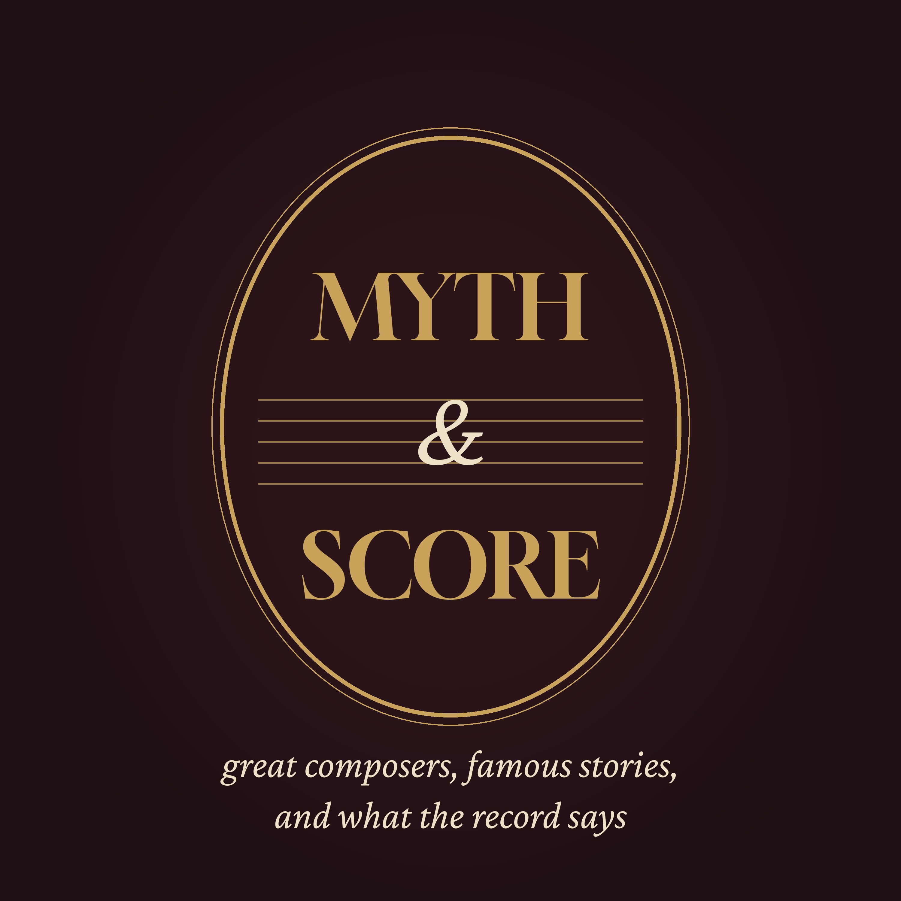

Myth and Score
The most famous stories about great composers, held up to the light: what the letters, records and music actually say. Some turn out true, some half true, some pure legend. Told calmly, at length.
Episodes
1. Did Salieri Really Poison Mozart? · 45 min
Mozart died in Vienna in December 1791, and the rumour that Antonio Salieri had poisoned him has outlived both men. We follow the two composers through Vienna: the orphan from Legnago who became the emperor's…
Also from the late hours: Embers of History · Slow Orbit · The Quiet Armoury